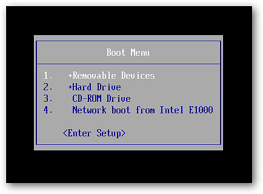

Kuruluma Giriş
Liman MYS Debian tabanlı sistemlerde sorunsuz şekilde kurulabilmektedir. Bunun için mevcut durumda test edilen aşağıdaki sistemlerde kurulabilmektedir. Kurumsal olarak kullanımda Masaüstü ortamı olmayan Debian tabanlı herhangi bir sistemde kurulması önerilmektedir.
- Test edilmiş İşletim Sistemleri:
- Pardus Sunucu
- Pardus 17.x Sunucu
- Pardus 19.x Sunucu
- Ubuntu Server
- Ubuntu 18.04.x
- Ubuntu 20.04.x
- Debian GNU/Linux Server
- Debian 9.x
- Debian 10.x
Liman MYS sistemi geniş bir kaynak tüketimi yapmamaktadır. Giriş seviyesi bir kullanım için aşağıdaki kaynaklar yeterli olacaktır. Sistem kurulumu için sanal veya fiziksel ortam kurulumu fark etmeyecektir.
- Kararlı Minimum gereksinim:
- 2 CPU Çekirdeği (1.7GHz ve üstü)
- 2 GB RAM
- 50 GB boş Disk Alanı
- 1 x Ağ adaptörü
Kurumsal kullanım için HAVELSAN ve yetkili ekosistem firmaları ile iletişim kurulması önerilmektedir.
1. USB ile Başlatma
1.a. USB ile Başlatma - Fiziksel cihazda USB ile başlatma
Fiziksel cihazları USB ile başlatabilmek teknik olarak bilgi güvenliği açısından sakıncalı bir olaydır. Bu nedenle genellikle "boot order" olarak belirlenen veya "BIOS Ayarları" gibi kısımlar kurumsal ortamlara parolalı olarak giriş yapılabilmektedir.
BIOS üzerinde parola yoksa veya parolayı biliyorsanız fiziksel cihazınız açılırken BIOS'unuzun özelliğine göre bir klavye tuşuyla "boot menu"'ye giriş yapılabilmektedir. Bu tuş genellikle F8 ile F12 arasındaki tuşlardan birisi olarak belirlenmektedir.
İşletim sistemi kurulması için internetten Boot olabilir ISO dosyasını indirip USB belleğe yazdırmanız gerekmektedir. Daha sonra cihazınızın USB portuna bu belleği taktıktan sonra bilgisayarı açmaya başladığınızda BIOS ekranı belirdiğinde boot menü tuşuna bastığınızda aşağıdaki gibi görsel çıkacaktır.

Boot menu üzerinde USB Devices, Removable Devices gibi ifadeler başta olmadığı durumda klavyeden yön tuşları ile bu seçeneği seçip <ENTER> tuşuna basarak bilgisayarınızı USB Bellek üzerinden başlatabilirsiniz. Bu adımda USB Bellekte bir problem bulunmadığı durumda kurmak istediğiniz işletim sisteminin boot ekranı açılmaya başlayacaktır.
1.b. Sanal cihazda USB ile başlatma
Sanallaştırma ortamlarında USB ile başlatmak için BIOS yerine sanallaştırma depolama ortamında ilgili ISO'nun bulunması yeterlidir. Bunun için farklı sanallaştırma ortamları için farklı senaryolar gerçekleşebilmektedir.
VirtualBox'un kurulu olduğu sistemde ilgili ISO dosyası olması durumunda aşağıdaki bağlantıda anlatıldığı gibi kurulum yapabilirsiniz:
Proxmox üzerinde web arayüzünden ISO dosyasını Depolama alanına yüklenmesi gerekmektedir. Bu işlem yapıldıktan sonra aşağıdaki bağlantıda anlatıldığı gibi kurulum yapabilirsiniz: